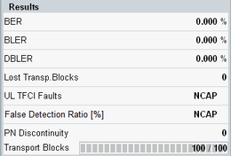

All results of the Signaling BER measurement are shown in the lower left part of the BER tab of the RX measurements view.
The results are described briefly below. For additional information concerning the measurement procedures, see "BER, BLER and DBLER Tests" and "BTFD Tests (FDR and UL TFCI Faults)".

Bit error rate, percentage of received erroneous data bits.
Block error ratio, percentage of received transport blocks with at least one erroneous bit in the data part or CRC field. The BLER can be determined for the downlink or for the uplink, depending on the UL CRC setting.
Data block error rate, percentage of received transport blocks with at least one erroneous bit in the data part (errors in CRC field are ignored).
Difference between the number of blocks sent and the number of blocks received from the UE under test. Lost blocks do not enter into the calculation of BLER and DBLER. The number of lost transport blocks is an additional indicator for the quality of the whole connection from the R&S CMW to the UE and back.
Percentage of transport blocks which the UE receiver detected with a wrong transport format, irrespective of the result of the CRC check.
This measurement result is used for BTFD.
False transmit format detection ratio; the percentage of transport blocks which passed the UE receiver’s CRC check but were detected with a wrong transport format.
This measurement result is used for BTFD.
Number of transport blocks that the R&S CMW corrected (i.e. reordered) in the PN resync procedure, see "PN Resync".
During the first single measurement shot, this value indicates the number of received transport data blocks and the total number of blocks to be measured per single shot. Two equal numbers indicate that the first shot is complete and the statistical depth has been reached. A measurement in continuous mode still continues and calculates results from the previous statistical cycle (e.g. the previous 100 transport blocks).